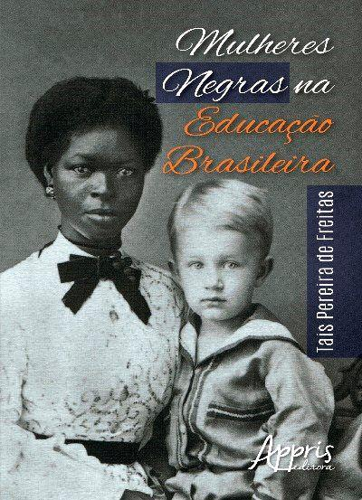

Wilton do Nascimento Medina Júnior
Idade: 13 anos
Data de Nascimento: 23 de fevereiro de 2013
Série: 8º ano
✨ Orgulho em ser autista - Neurodiverso! 🌈
Uma mulher que marcou a história na luta contra o racismo
Idade: 13 anos
Data de Nascimento: 23 de fevereiro de 2013
Série: 8º ano
✨ Orgulho em ser autista - Neurodiverso! 🌈
Maria Firmina dos Reis nasceu em 1822, no Maranhão, e foi uma das mulheres mais importantes da literatura brasileira. Ela foi professora, escritora, compositora e uma grande defensora da igualdade racial.
Em uma época marcada pela escravidão e pelo preconceito, Maria Firmina usou seus livros e sua voz para denunciar as injustiças sofridas pelas pessoas negras.

Sua obra mais famosa foi Úrsula, publicada em 1859. O livro é considerado um dos primeiros romances abolicionistas do Brasil.
Ela também escreveu:
 Conhecer Mais
Conhecer Mais
Maria Firmina dos Reis lutou contra o racismo através da educação e da literatura. Ela defendia a liberdade das pessoas escravizadas e acreditava que todos mereciam respeito e igualdade.
Suas histórias mostravam os sentimentos e sofrimentos das pessoas negras, algo muito importante em uma época em que o preconceito era muito forte.

Maria Firmina dos Reis abriu caminho para futuras escritoras negras no Brasil. Sua coragem ajudou a combater o racismo e inspirou muitas pessoas na luta pela igualdade.
Hoje ela é reconhecida como símbolo da literatura afro-brasileira e uma das mulheres mais importantes da história do país.
 Compartilhar História
Compartilhar História